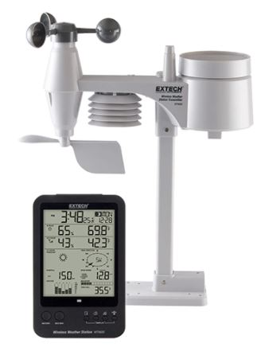
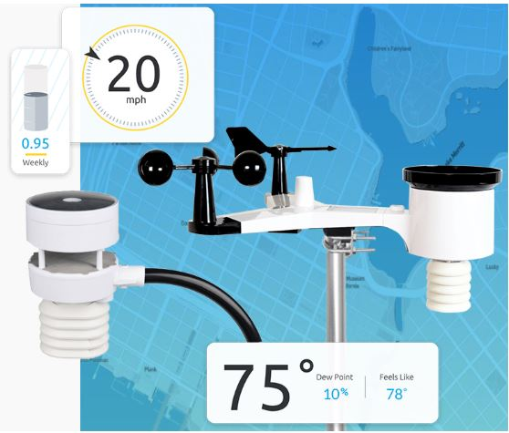
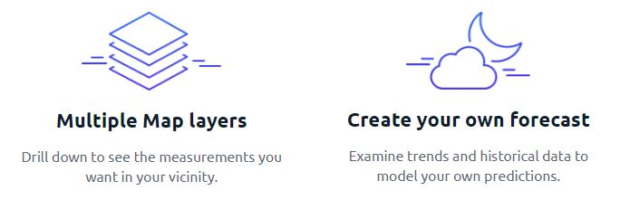

WeatherTop – Two Decades of Making Weather Personal
Providing Truly Personal Weather Tools
Understanding and preparing for weather conditions is vital: for recreation, for livelihoods, and for the preservation of cherished people and possessions alike. For empowered individuals around the world, weather is personal. WeatherTop strives to empower our customers to harness their personal weather data to make decisions and take control of their lives and the world around them. We provide affordable, accurate and easy-to-install outdoor weather stations combined with bright, engaging indoor console displays and built-in connectivity to a powerful web-based dashboard and map of weather station readings. Share readings from your own station or follow other weather stations nearby or at your favorite recreational or work location. With Ambient Weather, you are no longer limited to the readings from distant weather stations that may not represent your local conditions.

The Most Connected Weather Experience
WeatherTop Inc. produce a modular weather station called the WeatherTop 1000. This lowcost device takes a set of meteorological readings and displays these on a simple LCD display. Our new web application is a Web companion application for the device.

Our guarantee: at WeatherTop Inc., we're committed to providing you, with an exceptional quality and reliability. Every WeatherTop 1000 is checked in detail for stability, usability and inter-interoperability. If you are unhappy with anything in your device we will refund you the full amount for the complete suite, no questions asked.
Our personal weather dashboard at AmbientWeather.net is the most versatile and intuitive in the industry. Posting data online from your own station online is free and requires only a quick connection of your station console to your Wi-Fi network. Connect with other nearby stations, or track distant weather at your favorite ski area, marina, beach or work location. And, once connected, you can interact with your personal station data on Alexa, Google Home and IFTTT.

Two Decades of Focus on Your Weather Needs
WeatherTop was incorporated in Waterford in 1971. The name WeatherTop Inc. signifies the company’s commitment to EXcellence in TECHnology. In 2007, WeatherTop Inc. was acquired by FLIR Systems, a global leader in innovative infrared thermal imaging solutions.
Premium Service and Support
Our knowledgeable sales staff provides premarket support for all of the products we offer. You can call or email and we will assist with product selection, installation and connection. We are committed to your success with our products. And, in the event that an WeatherTop product fails to meet your expectations, we make it easy to return, replace or get service on your WeatherTop products.
We will be reviewing these favourites in the coming weeks, so please check in again to find out why these are our favourite apps.
Why not come in and walk aroud the store? Directions are included below.